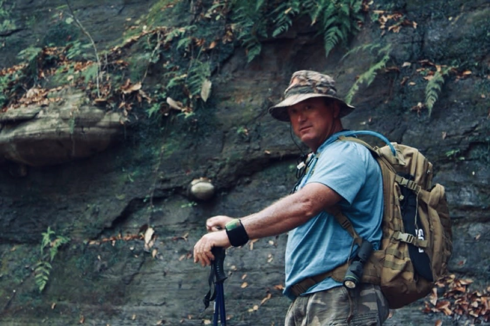

From the blog
Take Your Watch on the Trail Without Beating It Up
October 13, 2026

A good watch earns its keep on the trail. It tells time when your phone is dead, keeps you on schedule for the drive home, and takes the same beating you do. Rocks, poles, and pack straps are not kind to a watch case, though. Here is how to bring your watch hiking without coming home to a scratched up mess.
1. Trekking poles chew on wrists
Every plant of the pole swings your watch hand back and forth. The strap buckle and the watch lugs take the hit, and a full day of miles adds up fast. If you hike with poles, wear the watch a touch higher on your wrist, or move it to the other arm until you stop for the day.
2. Rocks and scramble sections
Any time you put a hand down on rock, the watch goes with it. Granite and sandstone are harder than most watch case metals, and one slip on a scramble can leave a deep gouge. On rocky sections, turn the watch face to the inside of your wrist so the case back takes any hit instead of the crystal.
3. Pack straps and buckles
Hip belt buckles, sternum straps, and zipper pulls all sit right where your wrist swings. Loading the pack, adjusting straps, and pulling zippers each land a small hit. Keep the watch under your cuff or under a shirt sleeve while you are working with the pack.
4. Dust, sweat, and river crossings
Fine trail dust works into the bezel and under the band. Sweat leaves salt on the case back. A quick rinse in clean water and a wipe with a dry cloth at camp go a long way. For river crossings, know your watch depth rating before you wade in, and dry the watch fully after.
5. Camp chores do the real damage
Gathering firewood, hammering tent stakes, and cooking over a stove put the watch right in the strike zone. Most trail scratches happen after the hike is done, when you stop thinking about the watch. Cover it or take it off before chores.
The trail is exactly where a watch proves its worth, and exactly where it takes a beating. That is why we built the WATCH-ET sleeve, a neoprene cover that slips over your watch, with a flap that folds over the face and a side pocket for small essentials. Slide it on for the rocky miles and the camp chores, take it off for the summit photo.
Tired of babying your watch?
Medium $23 fits watches up to 48mm. Large $25 fits up to 53mm. Five colors.
Order Yours More Tips